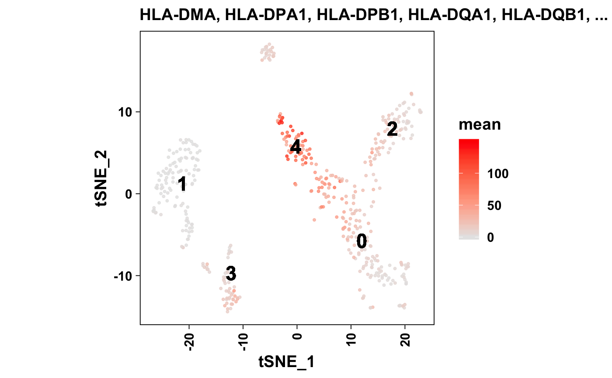
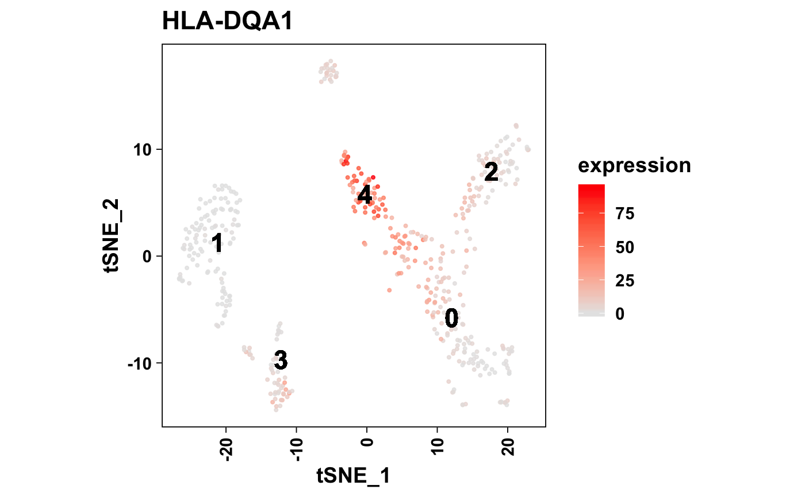

Plot gene expression per cell in multiple formats:
plotMarkerTSNE(): t-SNE gene expression plot.plotDot(): Dot plot.plotViolin(): Violin plot.
plotKnownMarkersDetected(object, ...) plotMarkerTSNE(object, ...) plotMarkerUMAP(object, ...) plotTopMarkers(object, ...) # S4 method for seurat plotMarkerTSNE(object, genes, expression = c("mean", "median", "sum"), color = NULL, pointsAsNumbers = FALSE, pointSize = 0.75, pointAlpha = 0.8, label = TRUE, labelSize = 6L, dark = FALSE, grid = TRUE, legend = FALSE, aspectRatio = 1L, title = TRUE) # S4 method for seurat plotMarkerUMAP(object, genes, expression = c("mean", "median", "sum"), color = NULL, pointsAsNumbers = FALSE, pointSize = 0.75, pointAlpha = 0.8, label = TRUE, labelSize = 6L, dark = FALSE, grid = TRUE, legend = FALSE, aspectRatio = 1L, title = TRUE) # S4 method for seurat plotTopMarkers(object, markers, dimRed = c("tsne", "umap"), headerLevel = 2L, ...) # S4 method for seurat plotKnownMarkersDetected(object, markers, dimRed = c("tsne", "umap"), headerLevel = 2L, ...)
Arguments
| object | Object. |
|---|---|
| ... | Additional arguments. |
| genes | Gene identifiers. Must match the rownames of the object. |
| expression | Calculation to apply. Uses |
| color | Desired ggplot color scale. Must supply discrete values. When
set to |
| pointsAsNumbers | Plot the points as numbers ( |
| pointSize | Cell point size. |
| pointAlpha | Alpha transparency level. Useful when there many cells in the dataset, and some cells can be masked. |
| label | Overlay a cluster identitiy label on the plot. |
| labelSize | Size of the text label. |
| dark | Plot against a dark background using
|
| grid | Show major grid lines but hide axis lines. |
| legend | Include plot legend. |
| aspectRatio | Aspect ratio. |
| title | Plot title. |
| markers |
|
| dimRed | Dimensionality reduction method to apply. Defaults to t-SNE
(" |
| headerLevel | R Markdown header level. |
Value
Show graphical output. Invisibly return ggplot list.
plotTopMarkers
The number of markers to plot is determined by the output of the
topMarkers() function. If you want to reduce the number of genes to plot,
simply reassign first using that function. If necessary, we can add support
for the number of genes to plot here in a future update.
See also
Other Clustering Functions: cellTypesPerCluster,
knownMarkersDetected,
plotCellTypesPerCluster,
plotFeatureTSNE, plotPCElbow,
plotTSNE, sanitizeMarkers,
topMarkers
Examples
object <- seurat_small collagen_genes <- grep("^COL\\d", rownames(object), value = TRUE) print(collagen_genes)#> [1] "COL1A1" "COL5A1" "COL4A2" "COL6A1" "COL6A2" "COL6A3" "COL1A2" #> [8] "COL3A1" "COL18A1" "COL5A2"mito_genes <- grep("^MT-", rownames(object), value = TRUE) print(mito_genes)#> [1] "MT-ND6" "MT-CO2" "MT-CYB" "MT-ND2" "MT-ND5" "MT-CO1" "MT-ND3" #> [8] "MT-ND4" "MT-ND1" "MT-ATP6" "MT-CO3" "MT-ND4L" "MT-ATP8"# t-SNE plotMarkerTSNE( object = object, genes = collagen_genes, dark = TRUE, grid = TRUE, title = "collagen" )plotMarkerTSNE( object = object, genes = mito_genes, dark = FALSE, grid = FALSE, title = "mito" )# Number cloud plotMarkerTSNE( object = object, genes = collagen_genes, pointsAsNumbers = TRUE )# UMAP plotMarkerUMAP( object = object, genes = collagen_genes, dark = TRUE, grid = TRUE, title = "collagen" )plotMarkerUMAP( object = object, genes = mito_genes, dark = FALSE, grid = FALSE, title = "mito" )# Top markers markers <- topMarkers(all_markers_small, n = 1) markers#> # A tibble: 5 x 18 #> # Groups: cluster [5] #> cluster rowname geneID geneName pct1 pct2 avgLogFC padj pvalue #> <fct> <chr> <chr> <chr> <dbl> <dbl> <dbl> <dbl> <dbl> #> 1 0 COL1A2 ENSG00000164… COL1A2 1 0.465 2.56 5.31e-58 1.06e-60 #> 2 1 S100A10 ENSG00000197… S100A10 0.741 0.266 2.17 4.75e-30 9.50e-33 #> 3 2 MYL4 ENSG00000198… MYL4 0.872 0.123 2.14 3.25e-55 6.50e-58 #> 4 3 MT-ATP6 ENSG00000198… MT-ATP6 1 0.993 1.16 1.80e-31 3.59e-34 #> 5 4 H3F3A ENSG00000163… H3F3A 1 0.767 1.38 3.89e-25 7.79e-28 #> # ... with 9 more variables: seqnames <fct>, start <int>, end <int>, #> # width <int>, strand <fct>, geneBiotype <fct>, description <chr>, #> # seqCoordSystem <fct>, broadClass <fct>markers <- head(markers, n = 1) plotTopMarkers(object, markers = markers)#> | | 0 % ~calculating #> #> ## Cluster 0 {.tabset} #> #> #> #> ### COL1A2 {.tabset} #>#> |++++++++++ | 20% ~04s |++++++++++++++++++++ | 40% ~01s |++++++++++++++++++++++++++++++ | 60% ~01s |++++++++++++++++++++++++++++++++++++++++ | 80% ~00s |++++++++++++++++++++++++++++++++++++++++++++++++++| 100% elapsed = 01s# Known markers detected markers <- head(known_markers_small, n = 1) markers#> # A tibble: 1 x 19 #> # Groups: cellType [1] #> cellType cluster geneID geneName rowname pct1 pct2 avgLogFC padj #> <chr> <fct> <chr> <chr> <chr> <dbl> <dbl> <dbl> <dbl> #> 1 Natural Kil… 1 ENSG0000… NCAM1 NCAM1 0.466 0.701 -0.954 2.25e-7 #> # ... with 10 more variables: pvalue <dbl>, seqnames <fct>, start <int>, #> # end <int>, width <int>, strand <fct>, geneBiotype <fct>, description <chr>, #> # seqCoordSystem <fct>, broadClass <fct>plotKnownMarkersDetected(object, markers = markers)#> | | 0 % ~calculating #> #> ## Natural Killer Cell {.tabset} #> #> #> #> ### NCAM1 {.tabset} #>#> |++++++++++++++++++++++++++++++++++++++++++++++++++| 100% elapsed = 01s